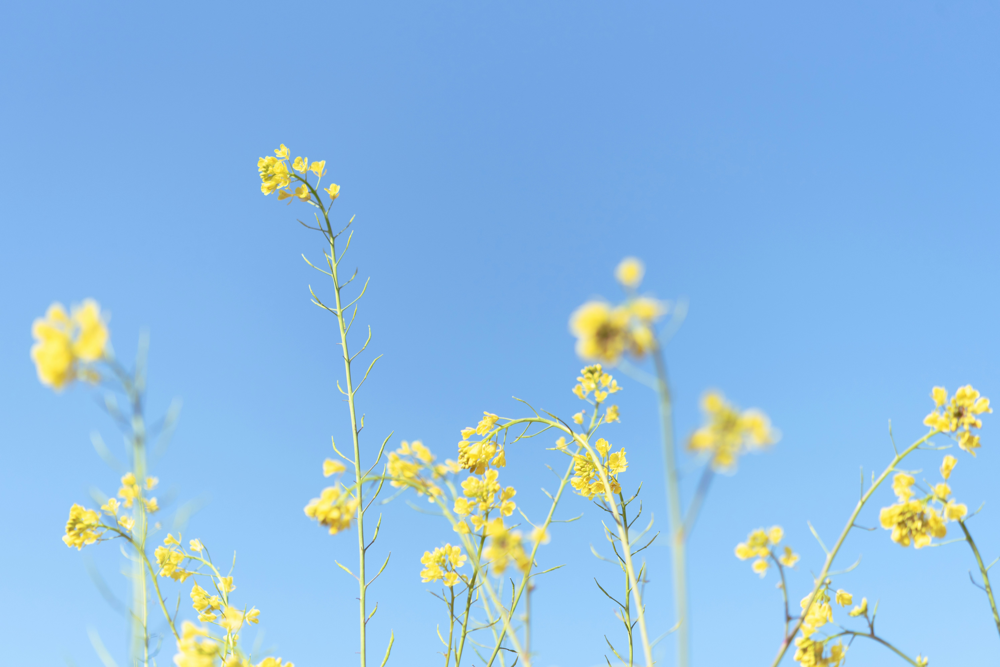
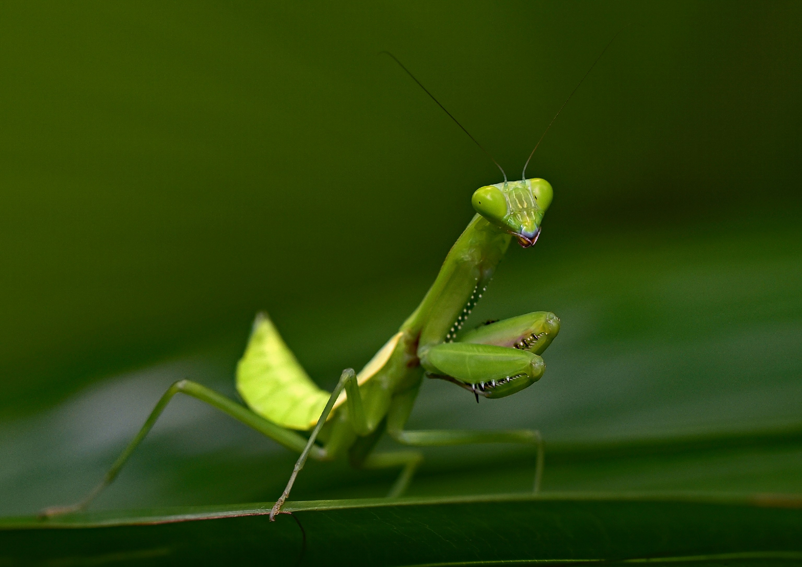

What Are Plants?

Plants are living organisms that play a crucial role in our ecosystem. They absorb sunlight through a process called photosynthesis, turning it into energy, which allows them to grow and thrive. Plants come in a wide variety of forms, from towering trees to tiny mosses, and each species serves a unique purpose in nature.

What Are Flowers?
Flowers are the reproductive structures of many plants, known for their beautiful colors, shapes, and fragrances. They play a crucial role in the plant’s life cycle by attracting pollinators such as bees, butterflies, and birds. These pollinators help in the process of fertilization, allowing plants to produce seeds and grow new generations. Beyond their biological function, flowers have significant cultural, symbolic, and aesthetic value.

What Are Insects?
Insects are a class of invertebrates that make up the largest group of animals on Earth. They are characterized by their three-part bodies (head, thorax, and abdomen), six legs, and exoskeletons. With over a million species identified, insects are incredibly diverse and play crucial roles in ecosystems around the world.
Types of Insects
Insects can be classified into various groups based on their characteristics and behaviors:
- Bees and Butterflies
Known for their role in pollination, these insects are attracted to flowers and help fertilize plants by transferring pollen. Bees, especially, are crucial for the production of food crops such as fruits, vegetables, and nuts.
- Ants
These social insects live in large colonies and play important roles in soil aeration and decomposition. Some species, like carpenter ants, are known for building their nests in wood, while others, like leafcutter ants, cultivate fungi for food.
- Beetles
One of the largest insect orders, beetles are found in almost every habitat. Some species, like ladybugs, are beneficial for pest control, while others, like the Japanese beetle, can be harmful to plants.
- Flies
Though often seen as pests, flies help break down waste and decomposing matter. Certain species, like fruit flies, are also used in scientific research to study genetics and evolution.
- Moths
Moths are nocturnal pollinators and, like butterflies, play a key role in the plant life cycle. However, certain moth species, like the clothes moth, are known for causing damage to fabrics.
- Spiders
Although technically not insects but arachnids, spiders are often included in discussions about garden and household insects. They help control insect populations by preying on other bugs.
Did You Know?
| The Largest Flower |
The Rafflesia arnoldii, also known as the corpse flower, is the world’s largest flower and can grow up to 3 feet in diameter. |
| Plants Clean the Air |
Houseplants like peace lilies and snake plants can purify indoor air by removing toxins such as formaldehyde and benzene. |
| Pollinator Power |
Bees are responsible for pollinating 70 of the top 100 crops that feed 90% of the world’s population. |
|
|